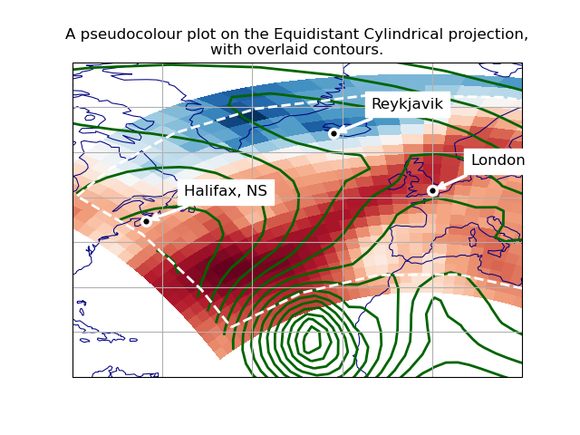
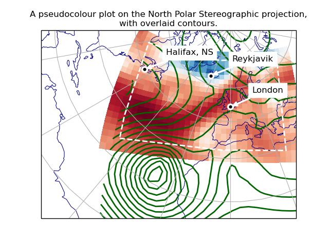

Note
Click here to download the full example code
Plotting in different projections¶
This example shows how to overlay data and graphics in different projections, demonstrating various features of Iris, Cartopy and matplotlib.
We wish to overlay two datasets, defined on different rotated-pole grids. To display both together, we make a pseudocoloured plot of the first, overlaid with contour lines from the second. We also add some lines and text annotations drawn in various projections.
We plot these over a specified region, in two different map projections.
- 
- 
import cartopy.crs as ccrs
import iris
import iris.plot as iplt
import numpy as np
import matplotlib.pyplot as plt
# Define a Cartopy 'ordinary' lat-lon coordinate reference system.
crs_latlon = ccrs.PlateCarree()
def make_plot(projection_name, projection_crs):
# Create a matplotlib Figure.
plt.figure()
# Add a matplotlib Axes, specifying the required display projection.
# NOTE: specifying 'projection' (a "cartopy.crs.Projection") makes the
# resulting Axes a "cartopy.mpl.geoaxes.GeoAxes", which supports plotting
# in different coordinate systems.
ax = plt.axes(projection=projection_crs)
# Set display limits to include a set region of latitude * longitude.
# (Note: Cartopy-specific).
ax.set_extent((-80.0, 20.0, 10.0, 80.0), crs=crs_latlon)
# Add coastlines and meridians/parallels (Cartopy-specific).
ax.coastlines(linewidth=0.75, color="navy")
ax.gridlines(crs=crs_latlon, linestyle="-")
# Plot the first dataset as a pseudocolour filled plot.
maindata_filepath = iris.sample_data_path("rotated_pole.nc")
main_data = iris.load_cube(maindata_filepath)
# NOTE: iplt.pcolormesh calls "pyplot.pcolormesh", passing in a coordinate
# system with the 'transform' keyword: This enables the Axes (a cartopy
# GeoAxes) to reproject the plot into the display projection.
iplt.pcolormesh(main_data, cmap="RdBu_r")
# Overplot the other dataset (which has a different grid), as contours.
overlay_filepath = iris.sample_data_path("space_weather.nc")
overlay_data = iris.load_cube(overlay_filepath, "total electron content")
# NOTE: as above, "iris.plot.contour" calls "pyplot.contour" with a
# 'transform' keyword, enabling Cartopy reprojection.
iplt.contour(
overlay_data, 20, linewidths=2.0, colors="darkgreen", linestyles="-"
)
# Draw a margin line, some way in from the border of the 'main' data...
# First calculate rectangle corners, 7% in from each corner of the data.
x_coord, y_coord = main_data.coord(axis="x"), main_data.coord(axis="y")
x_start, x_end = np.min(x_coord.points), np.max(x_coord.points)
y_start, y_end = np.min(y_coord.points), np.max(y_coord.points)
margin = 0.07
margin_fractions = np.array([margin, 1.0 - margin])
x_lower, x_upper = x_start + (x_end - x_start) * margin_fractions
y_lower, y_upper = y_start + (y_end - y_start) * margin_fractions
box_x_points = x_lower + (x_upper - x_lower) * np.array([0, 1, 1, 0, 0])
box_y_points = y_lower + (y_upper - y_lower) * np.array([0, 0, 1, 1, 0])
# Get the Iris coordinate sytem of the X coordinate (Y should be the same).
cs_data1 = x_coord.coord_system
# Construct an equivalent Cartopy coordinate reference system ("crs").
crs_data1 = cs_data1.as_cartopy_crs()
# Draw the rectangle in this crs, with matplotlib "pyplot.plot".
# NOTE: the 'transform' keyword specifies a non-display coordinate system
# for the plot points (as used by the "iris.plot" functions).
plt.plot(
box_x_points,
box_y_points,
transform=crs_data1,
linewidth=2.0,
color="white",
linestyle="--",
)
# Mark some particular places with a small circle and a name label...
# Define some test points with latitude and longitude coordinates.
city_data = [
("London", 51.5072, 0.1275),
("Halifax, NS", 44.67, -63.61),
("Reykjavik", 64.1333, -21.9333),
]
# Place a single marker point and a text annotation at each place.
for name, lat, lon in city_data:
plt.plot(
lon,
lat,
marker="o",
markersize=7.0,
markeredgewidth=2.5,
markerfacecolor="black",
markeredgecolor="white",
transform=crs_latlon,
)
# NOTE: the "plt.annotate call" does not have a "transform=" keyword,
# so for this one we transform the coordinates with a Cartopy call.
at_x, at_y = ax.projection.transform_point(
lon, lat, src_crs=crs_latlon
)
plt.annotate(
name,
xy=(at_x, at_y),
xytext=(30, 20),
textcoords="offset points",
color="black",
backgroundcolor="white",
size="large",
arrowprops=dict(arrowstyle="->", color="white", linewidth=2.5),
)
# Add a title, and display.
plt.title(
"A pseudocolour plot on the {} projection,\n"
"with overlaid contours.".format(projection_name)
)
iplt.show()
def main():
# Demonstrate with two different display projections.
make_plot("Equidistant Cylindrical", ccrs.PlateCarree())
make_plot("North Polar Stereographic", ccrs.NorthPolarStereo())
if __name__ == "__main__":
main()
Total running time of the script: ( 0 minutes 0.389 seconds)